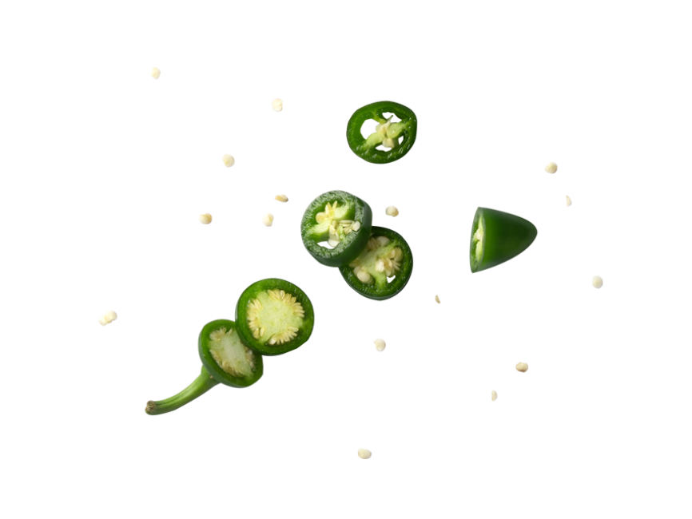

Nachos
The best thing about nachos is that they can be a snack, a starter or a main course. It also is quick and easy to prepare.
About nachos
The dish originated in northern Mexico in the 1940s. The meal was created by a restaurateur named Ignacio Anaya, and it was dubbed nachos after the creator's name. In Spanish, "Nacho" is a common nickname for Ignacio.
Recipe
For the spice mix:
- 2 tablespoons chili powder
- 1 1/2 teaspoons salt
- 1 teaspoon garlic
- 1 teaspoon onion
- 1 teaspoon cumin
- 1/2 teaspoon dried oregano
- 1/4 teaspoon black pepper
- Pinch of cayenne pepper (optional)
Ground beef
- Jalapeño
- Tomatoes
- Corn
- Cucumber
- Red onion
- Cilantro
Tortilla chips
Cook spice mix with ground beef
Chop everything into smaller pieces
Serve everything together with toppings

Cheddar
Guacamole
Salsa